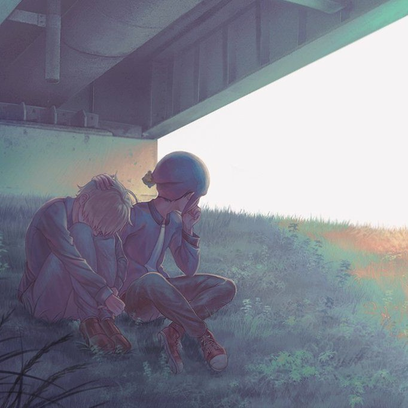

<!DOCTYPE html>
<html lang="en">

<head>
    <meta charset="UTF-8">
    <meta name="viewport" content="width=device-width, initial-scale=1, shrink-to-fit=no">
    <!-- <meta name="viewport" content="width=device-width, initial-scale=1.0">
    <meta http-equiv="X-UA-Compatible" content="ie=edge"> -->

    <title>移動拼圖</title>
    <style>
        #Puzzle {
            /* 最外層的正方形*/
            width: 480px;
            height: 480px;
            border: solid 5px rgb(255, 255, 255);
            padding: 0px;
            margin-left: 50px;
        }
        
        #picture {
            /* margin-left: 20px; */
            width: 480px;
            height: 480px;
            background: url(../images/289963.jpg);
            border: solid 5px rgb(255, 255, 255);
            padding: 0px;
        }
        
        .cutsqu {
            width: 118px;
            /*要把邊框的距離算進去  加完會變120*/
            height: 118px;
            border-top: solid 1px gray;
            border-left: solid 1px gray;
            border-right: solid 1px gray;
            border-bottom: solid 1px gray;
            float: left;
            overflow: hidden;
        }
        
        .container {
            width: 1080px;
            margin: 0 auto;
            display: flex;
            /*只要左右值用auto就置中*/
        }
        
        .button4 {
            /* margin-left: 20px;*/
            width: 200px;
            height: 50px;
            background-color: white;
            color: black;
            border: 2px solid #e7e7e7;
        }
        
        .button4:hover {
            background-color: #e7e7e7;
        }
    </style>
</head>

<body>
    <div class="container">
        <div id="Puzzle"></div>
        <div id="picture"></div>
    </div>
    <div align="center">
        <input type="button" class="button4" value="開始拼圖!" />
    </div>
    <script src="https://ajax.googleapis.com/ajax/libs/jquery/2.2.4/jquery.min.js"></script>
    <script>
        $(function() {
            //將位置轉成座標
            var posConv = {};
            //填入16張圖
            for (var i = 0; i < 16; i++) {
                $("#Puzzle").append("<div class='cutsqu' id='Pic" + i + "'></div>");

                var x = i % 4;
                var y = parseInt(i / 4); //圖的四分之一

                $("#Pic" + i + " img").css("margin-left", x * -120).css("margin-top", y * -120);
                console.log(i + ": " + x + "," + y);
                //第i個換成第x行第y列 將位置轉成座標
                posConv[i] = {
                    col: x,
                    row: y

                };
                //  console.log(posConv[i]);
            }
            $("#Pic0 img").remove(); //移除左上角圖片

            function getNearPos(i) {
                // console.log("getNearPos的i=" + i);
                var pool = [];
                var y = posConv[i].row,
                    x = posConv[i].col;
                //toCheck用來放入待比對的對象
                if (y > 0) //上
                    pool.push((y - 1) * 4 + x);
                if (y < 4) //下
                    pool.push((y + 1) * 4 + x);
                if (x > 0) //左
                    pool.push(i - 1);
                if (x < 4) //右
                    pool.push(i + 1);

                console.log(pool);
                return pool;
            }

            //點選動作
            $(".cutsqu").click(function() {
                //找尋上下左右有沒有Pic0，有則可以與它交換位置
                //先找出元素是16個中第幾個?
                var cells = $("#Puzzle div");
                var i1 = cells.index(this);
                var toCheck = getNearPos(i1);
                while (toCheck.length > 0) {
                    var j = toCheck.pop();
                    if (cells.eq(j).attr("id") == "Pic0") //為空白格，交換位子
                    {
                        //排序，必要時對調，讓i1 < j
                        if (i1 > j) {
                            var k = j;
                            j = i1;
                            i1 = k;
                        }
                        var ahead = cells.eq(i1);
                        var behind = cells.eq(j);
                        var behindPrev = behind.prev();
                        //左右對調
                        if (Math.abs(i1 - j) == 1)
                            behind.after(ahead);
                        else //上下對調
                        {
                            ahead.after(behind);
                            behindPrev.after(ahead);
                        }
                        break;
                    }
                }
            });
            $("input:button").click(function() {
                for (var i = 0; i < 4; i++) {
                    var cells = $("#Puzzle div");
                    //找出空格所在位置，並取得其相鄰圖塊
                    var toMove = getNearPos(cells.index($("#Pic0")[0]));
                    cells.eq(toMove[ //由空格的相鄰圖塊擇一挪動
                        parseInt(Math.random() * toMove.length)
                    ]).click();

                }
            });
        });
    </script>
</body>

</html>